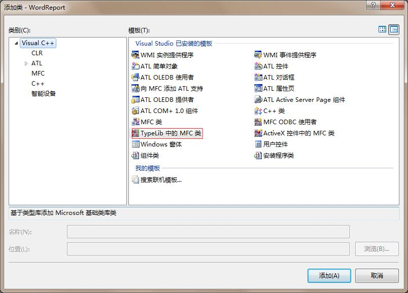
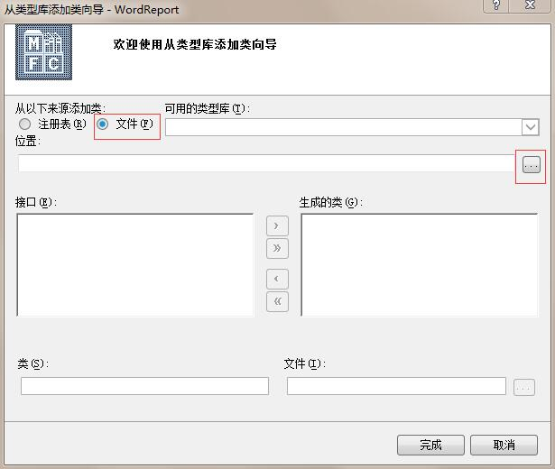
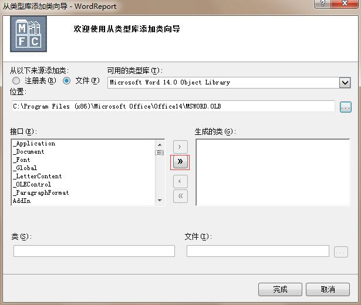

最近完成了一个使用VC++ 操作word生成扫描报告的功能，在这里将过程记录下来，开发环境为visual studio 2008
导入接口
首先在创建的MFC项目中引入word相关组件
右键点击 项目 –> 添加 –> 新类,在弹出的对话框中选择Typelib中的MFC类。

然后在弹出的对话框中选择文件，从文件中导入MSWORD.OLB组件。

这个文件的路径一般在C:\Program Files (x86)\Microsoft Office\Office14 中，注意：最后一层可能不一定是Office14，这个看机器中安装的office 版本。
选择之后会要求我们决定导入那些接口，为了方便我们导入所有接口。

导入之后可以看到项目中省成本了很多代码文件，这些就是系统生成的操作Word的相关类。
这里编译可能会报错，error C2786: “BOOL (HDC,int,int,int,int)”: __uuidof 的操作数无效
解决方法：
修改对应头文件
1 |
为：
1 |
|
再次编译，错误消失
常见接口介绍
要了解一些常见的类，我们首先需要明白这些接口的层次结构：
1 | Application(WORD 为例，只列出一部分） |
这些组件其实是采用远程调用的方式调用word进程来完成相关操作。
- Application：相当于一个word进程，每次操作之前都需要一个application对象，这个对象用于创建一个word进程。
- Documents：相当于word中打开的所有文档，如果用过word编辑多个文件，那么这个概念应该很好理解
- Templates：是一个模板对象，至于word模板，不了解的请自行百度
- Windows：word进程中的窗口
- Selection：编辑对象。也就是我们要写入word文档中的内容。一般包括文本、样式、图形等等对象。
回忆一下我们手动编写word的情景，其实使用这些接口是很简单的。我们在使用word编辑的时候首先会打开word程序，这里对应在代码里面就是创建一个Application对象。然后我们会用word程序打开一个文档或者新建一个文档。这里对应着创建Documents对象并从中引用一个Document对象表示一个具体的文档。当然这个Document对象可以是新建的也可以是打开一个现有的。接着就是进行相关操作了，比如插入图片、插入表格、编写段落文本等等了。这些都对应着创建类似于Font、Style、TypeText对象，然后将这些对象进行添加的操作了。
说了这么多。这些接口这么多，我怎么知道哪个接口对应哪个对象呢，而且这些参数怎么传递呢？其实这个问题很好解决。我们可以手工进行相关操作，然后用宏记录下来，最后我们再将宏中的VB代码转化为VC代码即可。
相关操作
为了方便在项目中使用，这里创建一个类用于封装Word的相关操作
1 | class CCreateWordReport |
1 | BOOL CCreateWordReport::CreateApp() |
这样我们就封装好了一些基本的操作，其实这些操作都是我自己根据网上的资料以及VB宏转化而来得到的代码。
特殊操作
在这里主要介绍一些比较骚的操作，这也是这篇文章主要有用的内容，前面基本操作网上都有源代码直接拿来用就OK了，这里的骚操作是我在项目中使用的主要操作，应该有应用价值。先请各位仔细想想，如果我们要根据前面的代码，从0开始完全用代码生成一个完整的报表是不是很累，而且一般报表都会包含一些通用的废话，这些话基本不会变化。如果将这些写到代码里面，如果后面这些话变了，我们就要修改并重新编译，是不是很麻烦。所以这里介绍的第一个操作就是利用模板和书签在合适的位置插入内容。
书签的使用
首先我们在Word中的适当位置创建一个标签，至于如何创建标签，请自行百度。然后在代码中的思路就是在文档中查找我们的标签，再获取光标的位置，最后就是在该位置处添加相应的内容了，这里我们举一个在光标位置插入文本的例子:
1 | void CCreateWordReport::WriteTextToBookMark(const CString& csMarkName, const CString& szText) |
表格的使用
在word报表中表格应该是一个重头戏，表格中常用的接口如下:
- CTables0: 表格集合
- CTable0: 某个具体的表格，一般通过CTables来创建CTable
- CColumn: 表格列对象
- CRow：表格行对象
- CCel：表格单元格对象
创建表格一般的操作如下:
1 | void CCreateWordReport::InsertTable(int nRow, int nColumn, CTable0& wdTable) |
往表格中写入内容的操作如下:
1 | BOOL CCreateWordReport::WriteDataToTable(CTable0& wdTable, int nRow, int nColumn, const CString &csData) |
合并单元格的操作如下:
1 | CTable0 wdTable; |
合并单元格用的是Merge函数，该函数的参数是一个单元格对象，表示合并结束的单元格。这里合并类似于我们画矩形时提供的左上角坐标和右下角坐标
移动光标跳出表格
当时由于需要连续的生成多个表格，当时我将前一个表格的数据填完，光标位于最后一个单元格里面，这个时候如果再插入的时候会在这个单元格里面插入表格，这个时候需要我手动向下移动光标，让光标移除到表格外。移动光标的代码如下:
1 | m_wdSel.MoveDown(&COleVariant((short)wdLine), &COleVariant((short)1), &COleVariant((short)wdNULL)); |
这里wdLine 是word相关接口定义的，表示希望以何种单位来移动，这里我是以行为单位。后面的1表示移动1行。
但是我发现在面临换页的时候一次移动根本移动不出来，这个时候我又添加了一行这样的代码移动两行。但是问题又出现了，这一系列表格后面跟着另一个大标题，多移动几次之后可能会造成它移动到大标题的位置，而破坏我原来定义的模板，这个时候该怎么办呢？我采取的办法是，判断当前光标是否在表格中，如果是则移动一行，知道出了表格。这里的代码如下:
1 | //移动光标，直到跳出表格外 |
样式的使用
在使用样式的时候当然也可以用代码来定义，但是我们可以采取另一种方式，我们可以事先在模板文件中创建一系列样式，然后在需要的时候直接定义段落或者文本的样式即可
1 | m_wdSel.put_Style(COleVariant("二级标题")); //在当前光标处的样式定义为二级标题样式，这里的二级标题样式是我们在word中事先定义好的 |
插入图表
我自己尝试用word生成的图表样式还可以，但是用代码插入的时候，样式就特别丑，这里没有办法，我采用GDI+绘制了一个饼图，然后将图片插入word中。
1 | BOOL CCreateWordReport::DrawVulInforPic(const CString& csMarkName, int nVulCnt, int nVulCris, int nHigh, int nMid, int nLow, int nPossible) |
最后，各个接口的参数可以参考下面的链接:
.net Word office组件接口文档